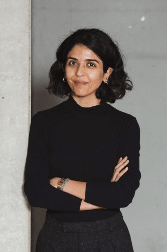

Hi! I study what legislators do when they leave home.
My research focuses on how politicians operate in international arenas, from international organisations to transnational networks, & what this reveals about the regimes they represent. I'm particularly interested in autocracies & hybrid regimes, with a (minor) regional focus on MENA.
Methodologically, I combine causal inference, quasi-experimental design & computational text analysis with fieldwork & elite interviews.
My background spans academic research and policy. I'm a PhD candidate at the University of Konstanz, and have held roles at SIPRI, UNODC and EESC among others.
Things I'm curious about & feel free to reach out if you are too :)

Photo credit: Inka Reiter
Full curriculum vitae including all publications, grants, teaching, fellowships, presentations, and academic training.
Last updated May 2026.
Download CV (PDF)
Department of Politics and Public Administration
University of Konstanz
Universitätsstraße 10, 78464 Konstanz
meray[dot]maddah[at]uni[hyphen]konstanz[dot]de
meraymaddah[at]outlook[dot]de